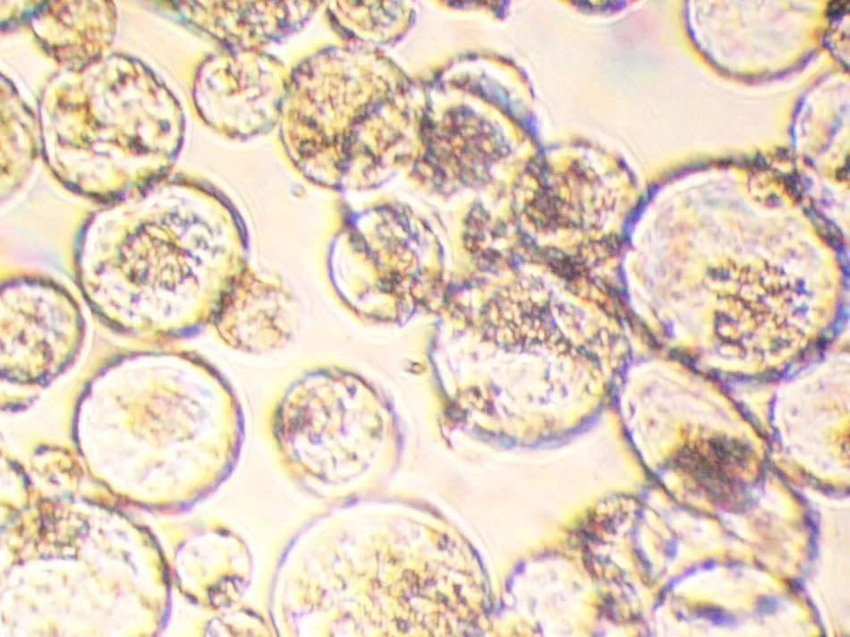
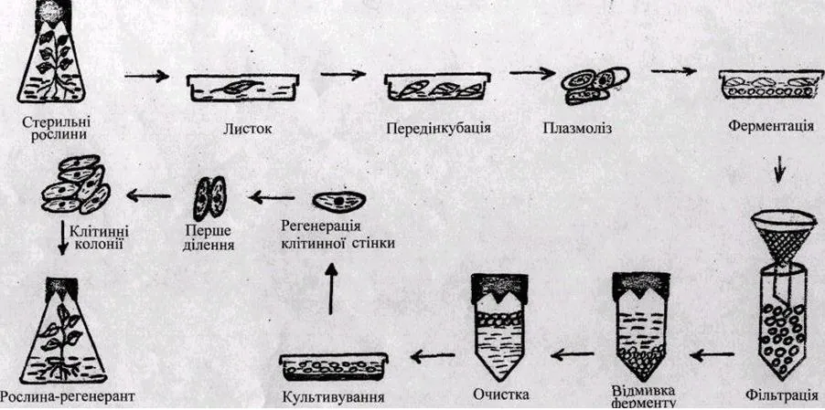

01Мета і план
Мета
Опанувати механічний і ферментативний методи виділення протопластів (клітин, позбавлених клітинної стінки), навчитися очищати й культивувати їх та зрозуміти, як протопласти зливають для соматичної гібридизації.
Знадобиться
- 1 М сахароза, пробірки, препарувальні голки, мікроскоп;
- епідерміс червоної цибулі, листки традесканції чи бегонії; стерильні листки й калюс тютюну;
- ферменти Cellulase, Macerozyme, Driselase, фільтр «Millipore», нейлонові фільтри;
- міні-центрифуга, середовища W-5 і К-3, ламінар-бокс, інвертований мікроскоп.
Ви дізнаєтеся
- як вибрати розчин сахарози, ізотонічний тканині, за формулою Ψ = −C·R·T;
- від чого залежить вихід протопластів при ферментній обробці;
- чому протопласти спливають у сахарозі й осідають у W-5;
- як утворюються гетерокаріони і скільки їх буде за дії ПЕГ.
02Теоретичні відомості
Протопласт — клітина без стінки
Ізольований протопласт — внутрішній вміст рослинної клітини, оточений плазмалемою (зовнішньою клітинною мембраною), але без целюлозної клітинної стінки. Позбавлений стінки, він набуває форми кулі. Протопласти можна виділити з листків, коренів, гіпокотилів (підсім'ядольних колін проростків), а також з калюсних і суспензійних культур — найкраще в логарифмічній фазі росту, коли стінки легко руйнуються, а протопласти найжиттєздатніші (див. тему 5).
Протопласти — унікальна модель для фізіології (за Р. Г. Бутенко): на них вивчають склад і будову первинної клітинної стінки (руйнуючи її специфічними ферментами і спостерігаючи синтез de novo — «заново»), властивості й транспорт через плазмалему, дію гормонів, інгібіторів і фітотоксинів, «м'яко» виділяють органели. Протопласт може стати реципієнтом (приймачем) ядер, мітохондрій і хлоропластів інших рослин, окремих генів і чужорідної ДНК (див. тему 11, молекулярну генетику). Е. Кокінг встановив, що завдяки піноцитозу (захопленню речовин впинанням мембрани) протопласт поглинає не тільки іони й цукри, а й макромолекули, віруси та органели.


Механічне виділення і плазмоліз
Уперше протопласти виділив Дж. Клеркер (1892), вивчаючи плазмоліз — відставання протопласта від стінки, коли клітина втрачає воду в концентрованому розчині, — у листках тілоріза Stratiotes aloides L. У плазмолізованих клітин надрізають стінку, і протопласти виходять у розчин. Метод тривалий і трудомісткий, дає мало протопластів і придатний лише для тканин з екстенсивним плазмолізом (епідерміс луски цибулі, традесканції, листок бегонії).
Напрям руху води визначає водний потенціал Ψ (МПа): вода переходить туди, де він нижчий. Для розчину неелектроліту (сахарози) осмотичний потенціал обчислюють за рівнянням Вант-Гоффа:
де i — ізотонічний коефіцієнт (для сахарози 1), C — молярна концентрація, моль/л, R = 0,008314 л·МПа/(моль·К), T — температура, К. Наприклад, 0,5 М сахарози при +22 °C: Ψs = −0,5·0,008314·295 ≈ −1,23 МПа. Для концентрованих розчинів формула — наближення: реальний осмотичний тиск сахарози трохи вищий.
У ряду розчинів 0,3–0,7 М (ЛР 24) тканина поводиться по-різному. У гіпотонічному розчині (Ψ розчину вищий за Ψ клітини) протопласт притиснутий тургором до стінки, і надріз рве мембрану. Розчин, у якому плазмоліз ледь починається (граничний плазмоліз), — ізотонічний тканині: його Ψs дорівнює осмотичному потенціалу клітинного соку. У гіпертонічних розчинах плазмоліз проходить стадії кутового (протопласт відходить у кутах клітини), увігнутого і опуклого (протопласт округлюється); об'єм протопласта підкоряється закону Бойля — Вант-Гоффа:
де Cгр — концентрація граничного плазмолізу, b — неосмотична частка об'єму (цитоплазма, органели; у моделі 0,22). Цілими протопласти зберігаються в розчині, водний потенціал якого близький до потенціалу тканини (трохи гіпертонічному): протопласт уже відстав від стінки, але не зневоднений (с. 101). Пошкоджує їх і надмірний плазмоліз.
Ферментативне виділення
Сучасний ферментативний (ензиматичний) метод видаляє стінку поетапною дією ферментів класів целюлаз (розщеплюють целюлозу), геміцелюлаз і пектиназ (руйнують пектин серединних пластинок, роз'єднуючи клітини, — мацерація); див. ферменти в Конспекті. У ЛР 25 використовують комерційні препарати грибного походження: Cellulase (целюлаза), Macerozyme (пектиназа) і Driselase (суміш целюлаз, геміцелюлаз і пектиназ). Переваги методу: одночасно отримують багато протопластів (до 10 млн з 1 г тканини чи клітин суспензії), клітини не зазнають сильного осмотичного стресу й не ушкоджуються. Виділення має три етапи: обробка ферментами, вивільнення протопластів зі стінок і відділення інтактних протопластів від уламків.
| Матеріал | Cellulase | Macerozyme | Driselase | Тканини на розчин | Режим |
|---|---|---|---|---|---|
| мезофіл листка тютюну | 0,5 % | 0,5 % | 0,2 % | 1 г на 7–10 мл | +28–30 °C, 15–18 год |
| калюс тютюну | 2 % | 1 % | 0,5 % | 2 г на 7–10 мл | кімнатна t, 20–22 год |
Комбінація ферментів специфічна для кожного типу клітин. Розчини готують перед дослідом, центрифугують і стерилізують фільтруванням через мембранний фільтр «Millipore» (нагрівання зруйнувало б ферменти). Щоб протопласти без стінки не лопнули, розчин містить осмотичний стабілізатор — маніт або сахарозу (у середовищі К-3 — 72,8 г/л маніту, тобто 0,4 М).
Про модель. Посібник дає рецептури й режими, але не кінетику. У моделі залишок стінки спадає експоненційно, W = e−k(t−1,5), швидкість k насичується з концентрацією ферменту (як у рівнянні Міхаеліса — Ментен) і подвоюється на кожні 10 °C; вивільнені протопласти поступово гинуть (kd росте з концентрацією ферментів і температурою). Параметри підібрано так, щоб оптимум виходу припадав на 15–18 год для листка і 20–22 год для калюсу, як у посібнику.
Очищення: флотація і відмивання
Після інкубації суміш фільтрують через нейлоновий фільтр (затримує нерозщеплені шматочки тканини) і центрифугують 3 хв при 1000 об/хв: життєздатні протопласти спливають на поверхню (флотація), а уламки стінок, мертві клітини й важкі частинки осідають. Протопласти збирають пастерівською піпеткою (скляною з витягнутим кінчиком) у пробірку з W-5 — промивним сольовим розчином із NaCl і CaCl2 — і осаджують 1–2 хв при 700 об/хв, двічі відмиваючи від ферментів. Рух частинок у центрифузі описує закон Стокса:
де v — швидкість осідання (від'ємна — спливання), ρч і ρс — густини частинки й середовища, r — радіус частинки, μ — в'язкість, RCF — відносна відцентрова сила (у скільки разів прискорення в центрифузі більше за g), rрот — радіус ротора, см, n — оберти за хвилину. При rрот = 9 см 1000 об/хв дають ≈ 100 × g, 700 об/хв — ≈ 50 × g. Протопласт (≈ 1,045 г/см³) легший за 0,6 М сахарозу (≈ 1,08 г/см³) і спливає, але важчий за W-5 (≈ 1,02 г/см³) і в ньому осідає. Густини частинок у моделі — типові довідкові значення.
| Компонент | W-5 | К-3 | Компонент | К-3 |
|---|---|---|---|---|
| NaCl | 9000 | — | MnSO4·H2O | 14 |
| CaCl2·2H2O | 18 400 | 900 | H3BO3 / ZnSO4·7H2O | 3 / 2 |
| KCl | 800 | — | CuSO4, CoSO4 | 0,025 |
| Глюкоза | 1000 | — | KI / Na2MoO4·2H2O | 0,75 / 0,25 |
| NH4NO3 | — | 250 | Мезоінозит / нікотинова к-та | 100 / 1 |
| KNO3 | — | 2500 | Гідролізат казеїну | 500 |
| MgSO4·7H2O | — | 250 | Вітаміни B1 / B6 | 10 / 1 |
| NaH2PO4·H2O | — | 150 | НОК / 2,4-Д / БАП | 0,2 / 1 / 0,2 |
| (NH4)2SO4 | — | 134 | Сахароза | 10 000 |
| Fe-хелат | — | 250 | Маніт | 72 800 |
НОК — α-нафтилоцтова кислота (синтетичний ауксин), 2,4-Д — 2,4-дихлорфеноксиоцтова кислота (ауксин, стимулює поділ), БАП — 6-бензиламінопурин (цитокінін); див. фітогормони. У відсканованому тексті посібника формула нітрату амонію спотворена («NaH₄NO₃»), а марганець наведено як MnSO₄·7H₂O; у таблиці вище — NH₄NO₃ і MnSO₄·H₂O, як у класичному середовищі К-3.
Культивування і регенерація стінки
Середовище для протопластів містить осмотичний стабілізатор, мінеральні солі, джерело вуглецю й азоту, вітаміни та фітогормони; рН 5,4–5,8, температура +22–28 °C, освітлення не більше 2000 лк. Протопласти культивують у рідких краплях у пластикових чашках Петрі — український учений Ю. Ю. Глеба (1978) запропонував вирощувати навіть поодинокі протопласти в мікрокраплях об'ємом 1 мкл — або методом платирування: суспензію змішують з рівним об'ємом середовища з 1 % агару (не гарячішого за +45 °C), і кожен протопласт фіксується на своєму місці, тож можна простежити його долю від регенерації стінки до рослини-регенеранта.
Одразу після видалення ферментів протопласт починає будувати нову клітинну стінку, видовжується й поводиться як ізольована клітина: ділиться і дає клон. Через 10–20 діб утворюються колонії-агрегати клітин. Оптимальна густота посіву за посібником — 103 кл/мл (у літературі для різних видів наводять і 104–105 кл/мл). На проліферацію впливають вид і фізіологічний стан вихідної тканини (освітлення, фотоперіод, сахароза), спосіб виділення, густота посіву й склад середовища.


Злиття протопластів
Протопласти, які ще не відновили стінку, здатні зливатися. Злиття — парасексуальна (соматична) гібридизація: батьківськими «гаметами» слугують звичайні диплоїдні клітини. Так схрещують філогенетично віддалені види, отримують асиметричні гібриди (з геномом переважно одного з батьків), цибриди (ядро одного батька, цитоплазма обох), гібриди з трьох і більше клітин, рослини, гетерозиготні за позаядерними генами. Злиття буває спонтанним (у протопластів молодих тканин і суспензій) та індукованим — ПЕГ (поліетиленгліколем, полімером, що зневоднює й зближує мембрани), високим рН і підвищеною концентрацією Ca2+. Продукт злиття двох різних протопластів з двома ядрами — гетерокаріон, однакових — гомокаріон; багатоядерні продукти, як правило, гинуть. Ядерні гени успадковуються дво- або однобатьківськи; у міжвидових гібридах часто елімінується (вилучається) один із цитоплазматичних геномів. Отримано міжвидові, міжродові, міжтрибні й навіть міжродинні гібриди.
Якщо вважати злиття випадковими незалежними подіями з середнім числом партнерів λ на протопласт (розподіл Пуассона), частки протопластів дорівнюють:
де P0 — не злилися, P2 — у бінарних продуктах, p — частка протопластів типу А в суміші. Найбільше гетерокаріонів — при p = 0,5. Залежність λ від концентрації ПЕГ і його токсичність у моделі — наближення.
зовнішня мембрана протопласта; єдина його оболонка після видалення стінки.
відставання протопласта від стінки через втрату води в гіпертонічному розчині.
розчин з тим самим водним потенціалом, що й клітина; вода не переходить.
маніт чи сахароза в середовищі, що не дають протопласту набухнути й лопнути.
спливання легших частинок (цілих протопластів) у важчому розчині при центрифугуванні.
відносна відцентрова сила — прискорення в центрифузі, виражене в одиницях g.
клітина з ядрами двох різних батьків після злиття протопластів.
гібрид з ядром одного батька й цитоплазмою (органелами) обох.
Перевірте теорію в інтерактивній моделі: формула (1) і плазмоліз — на вкладці «Плазмоліз», закон Стокса — на вкладці «Очищення», формула (4) — на вкладці «Культура і злиття».
03Інтерактивна модель
Чотири вкладки проводять від тканини до гібридної клітини. Вихід протопластів з ферментної вкладки переходить на вкладку очищення.
Плазмоліз у ряду сахарози й механічне виділення
Шматочки забарвленого епідермісу 10–15 хв у розчинах 0,3–0,7 М сахарози, потім тканину надрізають голкою (с. 101). «▶ Запустити» — плазмоліз і надрізання.
Об'єкт
Пробірка (сахароза, М)
Плазмоліз
Закон Бойля — Вант-Гоффа: об'єм протопласта
Де виходять цілі протопласти
Колір клітин дає антоціан — пігмент клітинного соку у вакуолі; при плазмолізі вакуоля зменшується й темнішає. Тонкі нитки між протопластом і стінкою — тяжі Гехта (ділянки плазмалеми, що лишаються прикріпленими до стінки). Концентрації граничного плазмолізу (цибуля ≈ 0,42 М, традесканція ≈ 0,36 М, бегонія ≈ 0,31 М) — типові навчальні значення; див. теорію.
Ферментативне виділення з мезофілу та калюсу тютюну
Смужки листка Nicotiana tabacum L. у розчині ферментів у термостаті (с. 102). «▶ Запустити» — 24 год інкубації.
Вихідний матеріал і рецептура
Умови інкубації
Вихід протопластів з 1 г тканини
Що відбувається з тканиною
Мацерація — роз'єднання клітин пектиназою; залишок стінки — частка нерозщепленої целюлози. Маніт — шестиатомний спирт, осмотичний стабілізатор. Кінетичні параметри — наближення, відкаліброване за режимами посібника (теорія).
Очищення протопластів центрифугуванням
Крок 1 — флотація після фільтрування (1000 об/хв, 3 хв); крок 2 — осадження й відмивання в W-5 (700 об/хв, 1–2 хв), с. 102. Рух частинок у пробірці показано в реальному масштабі часу.
Крок
Осмотик для флотації
Параметри
Спливе чи потоне? (закон Стокса)
Розділення з часом
Від'ємна швидкість — протопласт спливає. Густина й в'язкість розчинів при +25 °C, густини частинок і радіус ротора — довідкові наближення; «у 0,5 мл К-3» враховує вихід із вкладки «Ферменти». Див. формулу 3.
Культивування протопластів і злиття ПЕГ
Режим «Культивування» — 20 діб у середовищі К-3; «Злиття» — суміш зелених протопластів мезофілу (А) і безбарвних калюсних (Б) у розчині ПЕГ.
Режим
Культивування
Освітлення
Злиття
Промивання Ca²⁺ при високому pH
Перебіг процесу
Оптимум
Гетерокаріон позначено жовтим пунктиром, багатоядерний продукт — червоним. ПЕГ — поліетиленгліколь; Ca²⁺ при високому pH (9–10) нейтралізує негативний заряд мембран і завершує злиття. Параметри λ(ПЕГ) і ефективності колоній — наближення; формули — у теорії (культивування, злиття).
04Хід лабораторних робіт
Робота 24. Виділення та культивування протопластів механічним методом с. 100–101
Матеріали: 1 М сахароза, дистильована вода, пробірки, штативи, піпетки на 10 мл, стерильні препарувальні голки, скляні палички, предметні й покривні скельця, фільтрувальний папір. Об'єкт: забарвлений епідерміс луски цибулі Allium cepa L., листки бегонії чи традесканції.
- Приготувати в пробірках розчини сахарози 0,3; 0,35; 0,4; 0,5; 0,55; 0,6; 0,7 М (розводячи 1 М сахарозу водою: V1М = C·V).
- Занурити шматочки тканини в розчини, щоб виник плазмоліз і протопласт став видимим у цілій клітині.
- Через 10–15 хв перенести тканину на предметне скло в краплю відповідного розчину.
- Притримуючи скляною паличкою, розділити тканину на тонкі смужки, залишивши цілим спільний кінець.
- Обережно провести препарувальною голкою по тканині, видавлюючи в розчин вміст зруйнованих клітин.
- Прибрати тканину, накрити краплю покривним скельцем, розглянути при збільшенні ×30.
- Записати концентрацію, при якій спостерігались ізольовані протопласти, замалювати їх і зробити висновки.
Робота 25. Виділення та культивування протопластів ферментативним методом с. 101–105
Обладнання: стерильні листки тютюну, ламінар-бокс, інвертований мікроскоп (з об'єктивами під столиком — для огляду чашок знизу), фільтр «Millipore», чашки Петрі, термостат, нейлонові фільтри, центрифужні пробірки, ферменти, середовища, міні-центрифуга.
- Ферментні розчини готують перед дослідом або за добу: для мезофілу — 0,5 % Cellulase, 0,5 % Macerozyme, 0,2 % Driselase; для калюсу — 2 % / 1 % / 0,5 %. Розчини центрифугують 5–10 хв при 2000 об/хв, стерилізують фільтром «Millipore» і розливають у стерильні чашки Петрі по 7–10 мл.
- Молоді листки тютюну нарізають вузькими смужками й одразу кладуть у ферментний розчин (1 г на 7–10 мл); інкубують у термостаті при +28–30 °C 15–18 год. Калюс — 2 г на 7–10 мл, 20–22 год за кімнатної температури.
- Вміст чашки фільтрують через нейлоновий фільтр у плоскодонну колбу.
- Суспензію центрифугують 3 хв при 1000 об/хв; життєздатні протопласти спливають — їх збирають пастерівською піпеткою в пробірку із середовищем W-5 (табл. 7).
- Протопласти осаджують 1–2 хв при 700 об/хв і двічі відмивають W-5 від ферментів.
- Осад ресуспендують у 0,5 мл середовища К-3 і висівають у чашки Петрі на це ж середовище; оптимальна густота посіву — 103 кл/мл.
- Культивують на розсіяному світлі або в термостаті при +26–28 °C.
- Через 10–20 діб протопласти утворюють колонії — агрегати клітин.
05Контрольні питання
Що таке ізольований протопласт і з яких тканин його виділяють?
Вміст клітини, оточений плазмалемою, без клітинної стінки. Виділяють з листків, коренів, гіпокотилів, калюсних і суспензійних культур (у логарифмічній фазі).
Для яких досліджень і технологій використовують протопласти?
Вивчення складу й синтезу клітинної стінки, властивостей плазмалеми, «м'яке» виділення органел, соматична гібридизація й цибридизація, введення органел і чужорідних генів.
Обчисліть Ψs 0,4 М розчину сахарози при +25 °C. Чому механічне виділення вимагає саме такого підбору концентрації?
Ψs = −0,4·0,008314·298 ≈ −0,99 МПа. Цілі протопласти зберігаються в розчині, близькому до ізотонічного (трохи гіпертонічному): протопласт відстав від стінки, але не зневоднений.
Назвіть недоліки механічного методу і переваги ферментативного.
Механічний — мала продуктивність, лише тканини з екстенсивним плазмолізом, трудомісткість. Ферментативний — до 10 млн протопластів з 1 г, слабкий осмотичний стрес, клітини не ушкоджуються.
Яку роль виконують Cellulase, Macerozyme і Driselase? Чому для калюсу концентрації вищі?
Целюлаза розщеплює целюлозу, пектиназа (Macerozyme) роз'єднує клітини, Driselase — суміш ферментів. Калюсу беруть удвічі більше на той самий об'єм розчину, і його стінки потребують інтенсивнішої обробки.
Чому при центрифугуванні протопласти спливають, а у W-5 осідають?
За законом Стокса напрям руху визначає знак (ρчастинки − ρсередовища): протопласт легший за концентрований розчин сахарози, але важчий за сольовий W-5.
Опишіть методи культивування протопластів (рідкі краплі, мікрокраплі Ю. Ю. Глеби, платирування).
Краплі суспензії в пластикових чашках; поодинокі протопласти в мікрокраплях 1 мкл; змішування з рівним об'ємом 1 % агару (≤ +45 °C), що фіксує кожен протопласт і дає змогу стежити за його розвитком.
Що таке гетерокаріон і цибрид? Як індукують злиття?
Гетерокаріон — клітина з ядрами двох різних батьків; цибрид — ядро одного, цитоплазма обох. Злиття індукують ПЕГ, високим рН і Ca2+.
06Література
- Мельничук, М. Д., & Кляченко, О. Л. (2014). Біотехнологія в агросфері: навчальний посібник (с. 97–105). НУБіП України.
- Бутенко, Р. Г. (1999). Биология клеток высших растений in vitro и биотехнологии на их основе. ФБК-Пресс.
- Глеба, Ю. Ю., & Сытник, К. М. (1984). Слияние протопластов и генетическое конструирование высших растений. Наукова думка.
- Cocking, E. C. (1960). A method for the isolation of plant protoplasts and vacuoles. Nature, 187(4741), 962–963. https://doi.org/10.1038/187962a0
- Nagata, T., & Takebe, I. (1971). Plating of isolated tobacco mesophyll protoplasts on agar medium. Planta, 99(1), 12–20. https://doi.org/10.1007/BF00392116
- Kao, K. N., & Michayluk, M. R. (1974). A method for high-frequency intergeneric fusion of plant protoplasts. Planta, 115(4), 355–367. https://doi.org/10.1007/BF00388618
- Nagy, J. I., & Maliga, P. (1976). Callus induction and plant regeneration from mesophyll protoplasts of Nicotiana sylvestris. Zeitschrift für Pflanzenphysiologie, 78(5), 453–455. https://doi.org/10.1016/S0044-328X(76)80093-1
- Menczel, L., Nagy, F., Kiss, Z. R., & Maliga, P. (1981). Streptomycin resistant and sensitive somatic hybrids of Nicotiana tabacum + Nicotiana knightiana. Theoretical and Applied Genetics, 59(3), 191–195. https://doi.org/10.1007/BF00264975